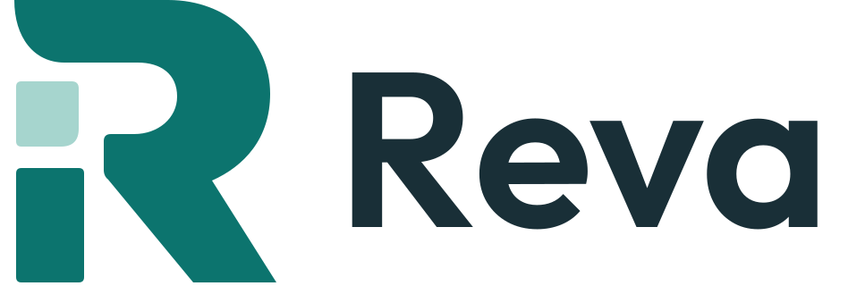

소중한 파일을, 다시.
USB·외장디스크에서 삭제하거나 빠른 포맷한 뒤 남아 있는 파일을 찾으세요.
Free Windows file recovery. Donations are optional.
설치 파일 게시를 준비하고 있습니다. 릴리스 상태 확인 · Releases
Windows 10 2004+/Windows 11 x64 · WebView2 필요. 원본 읽기 전용, 복구는 다른 물리 디스크로. 모든 파일의 복구를 보장하지 않습니다.
Windows Authenticode 미서명 · Unsigned Windows publisher certificate. 업데이트 전용 서명은 별도로 검증합니다.
Selzy Studio